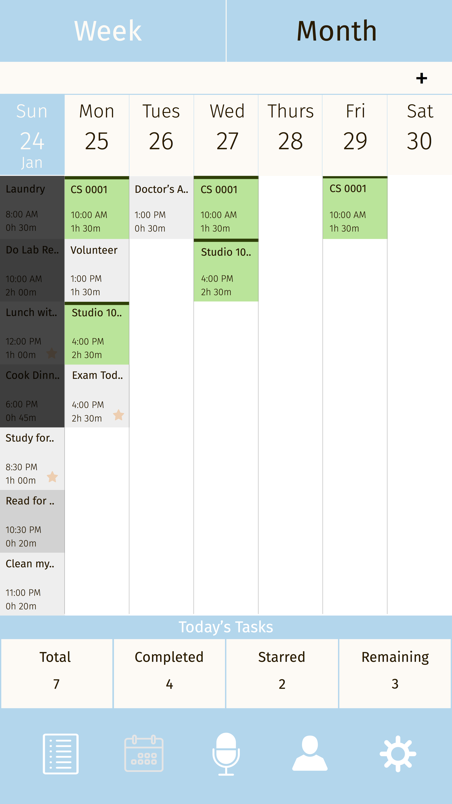
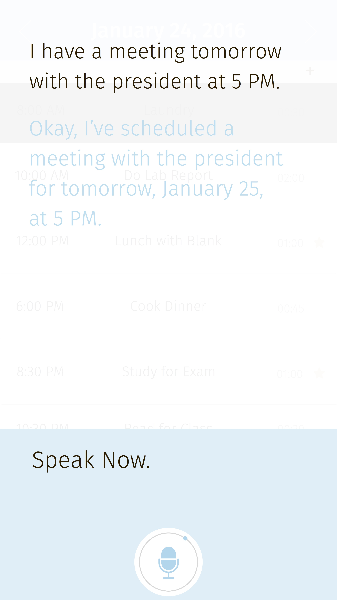

Taskify
Motivation
Life is busy and it's difficult to manage it all. Sometimes there's so much work to do that you have no idea where to start. Calendar and To-Do list apps are okay but they only work if you're constantly checking and updating them. Users need something more: a scheduling app.
Summary
Taskify is a personal scheduling Android app that not only keeps track of your calendar and to-do list but also tells you the best time to work on what. It acts kind of like your mom by scheduling all your tasks for you and occasionally checking in on your progress. Rather than having to update your phone everytime you start and end a different task, Taskify will intelligently prompt the user with a notification asking whether they're actually working on what they're suppose to or if they've finished early. If you're ahead of schedule or behind it's okay because taskify will reschedule everything for your to make sure you still meet your deadlines. If Taskify sees that you're trying to schedule too many events, it'll begin prompting you to drop some lower priority tasks. Taskify was a project built for PennApps Spring 2016. The month view for Taskify events. Black - Past Events. Gray - Tasks. Green - Time Commitments.
Technical Description
The scheduling algorithm used for Taskify was inspired by Rate-Monotonic scheduling used by Real-Time Operating Systems to schedule tasks. I took a real time embedded course last semester and thought it be interesting to see if the idea could be applied to people.For Taskify, calendar events were divided into two classes: TimeCommitments and Tasks. Time commitments include events such as meetings and lectures, which must be scheduled for their designated times and are assigned the highest priority of 0. Tasks must be completed by a certain deadline and homework assignments, workout goals, etc. Since TimeCommitments all have priorities of 0, they are scheduled first and then Tasks get scheduled on top of them. Since not all tasks are periodic, a new definition for priority was needed. I found many different scheduling heuristics online and ended up settling for the Weighted Modified Due Date heuristic where a task's priority is a function of how much of it has been processed, its deadline, and its difficulty, which was hardcoded for the purpose of this demo, but in the future should be based off user prompting or assumptions made based on the nature of the task.
Voice interaction was built into Taskify using Soundhound's recently released Houndify API, specifically the Calendar domain. Houndify takes user voice commands and returns a JSON of relevant information. For example, if a user mentions that they an exam at a certain time, Houndify will return a JSON containing information such as the events name, time, and location, which would then be interpreted to create Taskify calendar events.
 An example of users interacting with Taksify through voice commands.
What's Next?
For PennApps, our team was able to flush out a good proof of concept for scheduling human tasks like threads on a processor. The next step would be to create a backlog of other features such as accomodating sleep, breaks from work, resolving conflicts between events at the same time, etc and implementing these until there's feature compelete version of the app for the Google Play store.Technology Used
- Android Studio (Java)
- Soundhound's Houndify API - Calendar Domain